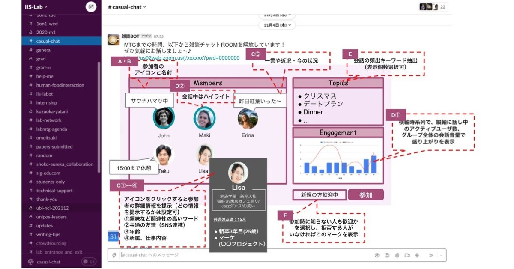
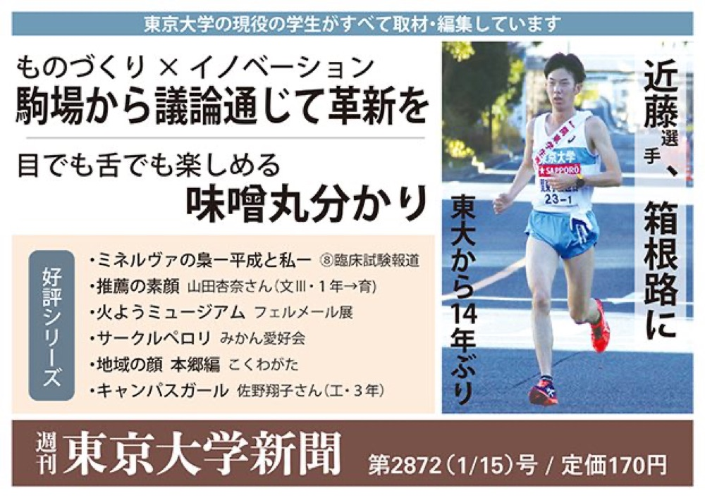

News
Media features and coverage.

Sep 2024
Featured as a career role model on BizReach's YouTube series "Shigoto-Reach."

Jan 2022
My master's research was picked up by Japan's leading technology and business media — ITmedia NEWS (a major national tech-news outlet), NewsPicks (Japan's top business-news platform), and Seamless — carrying HCI research to a broad public audience beyond academia. Also covered by University of Tokyo news (III & EEIC).

Jan 2019
Profiled as "Campus Girl" in the University of Tokyo's newspaper (Jan 15, 2019 issue) as a role model for women in engineering.
Apr 2015
My High School Diplomats exchange was featured in Sankei Shimbun, one of Japan's five national newspapers — a nationwide daily with a readership in the millions.